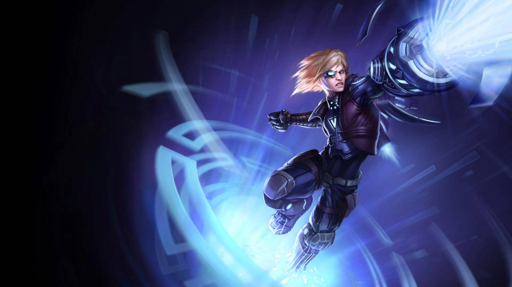
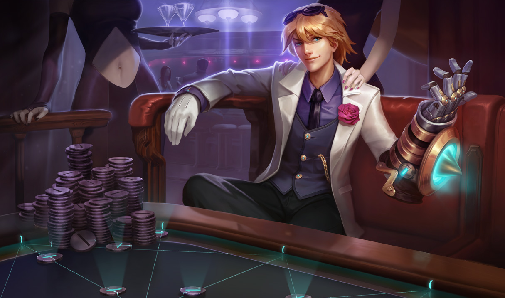
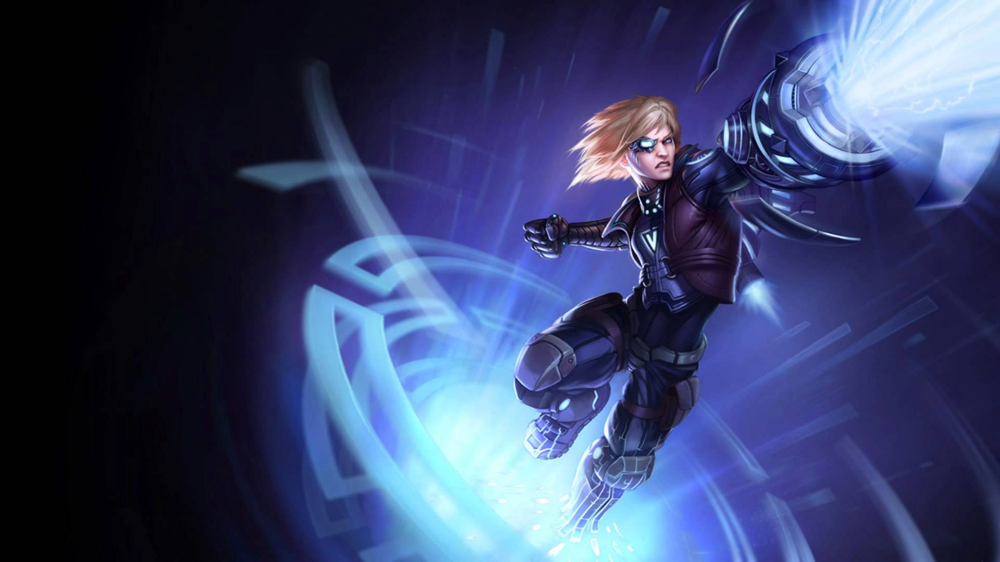
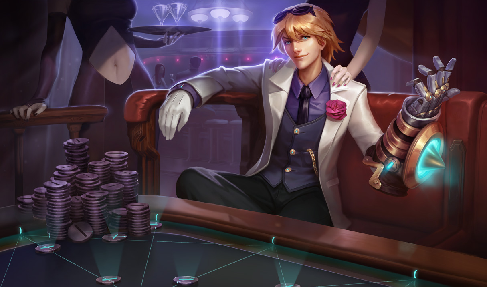
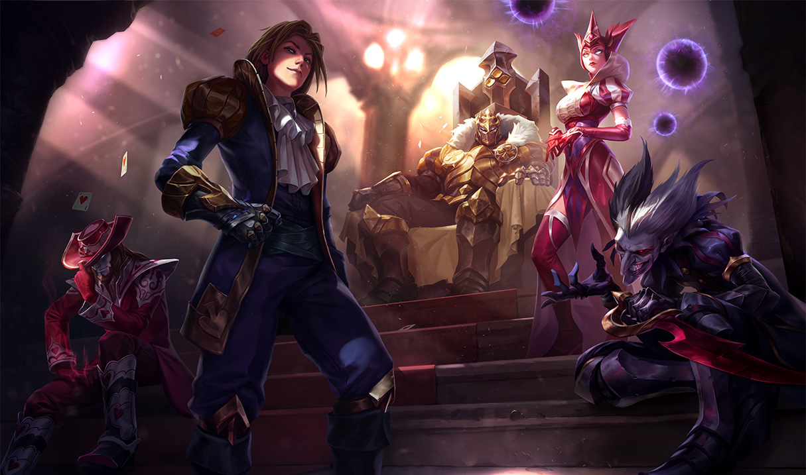
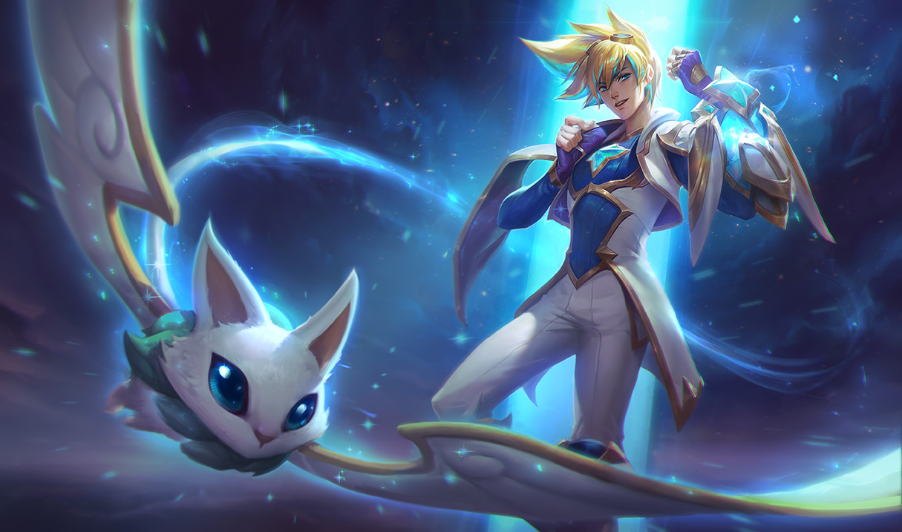
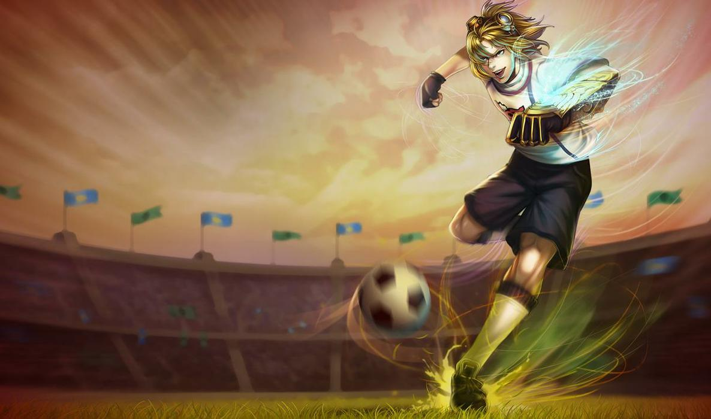
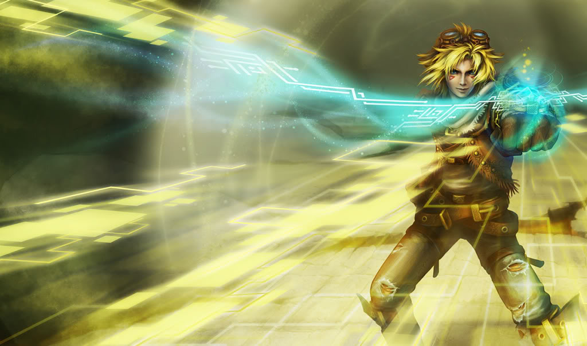

Are you watching LoL and wondering why is Ezreal so strong at Worlds Season 7? Why is he being played in the jungle and not in the bottom lane?
Ezreal has long since the bottom lane as ADC in early season 6. The reason for this change is mainly because of item changes for the AD's as a whole. When season mid season 6 item changes happened, they wanted to rebuff lethality as well as make crit items better. Lethality was the first to come, bring in the Yomou's Ghostblade and Duskblade of Draktharr.
These items were overtuned and brought in the AD's who like to do burst damage instead of sustained damage in the team fights. Ezreal being neither a lethality burst damage or sustained crit damage champion was no longer picked. Why pick a champion who is weak early as tradtion, but not weak at the mid and late game in comparison? When rito realized what
changes in lethality have done they ended up nerfing the items ever so slighty, and buffing the critical hit items. The buff to the critical hit items defined season 7. This brought back the old hyper carry AD's who shred everything once they hit their 3 item power spike. No other champions can contest with these crit champs in the late game. Ezreal definitely
not one of these champs.
Ezreal is defined by his passive which builds atack speed which each skill shot that landed on a target. The skill shot of choice is his Mystic Shot (Q). Ezreal's Arcane Shift (E) is basically a free flash summoner spell that does magic damage to the nearest target when teleporting to the other side. Each of these spells also build stacks into Ezreal's passive
to get his auto's going, as well as reset his auto attacks. Ezreal then showed up in the jungle, building free stacks off his Mystic shot on jungle camps, and easily kiting them between autos to take little to no damage. Once he clears his first camp he can power farm to the next camp without losing any of his attack speed buffs. This leads him to clear the jungle
faster than any other champion can at this time, leading to early ganks and easy kills for early game pressure. With this pressure your goal is to push this lead into a victory as fast as possible as winning late game against the power spiked ADC's may prove to be difficult.
 







Contact me and I will respond back ASAP!